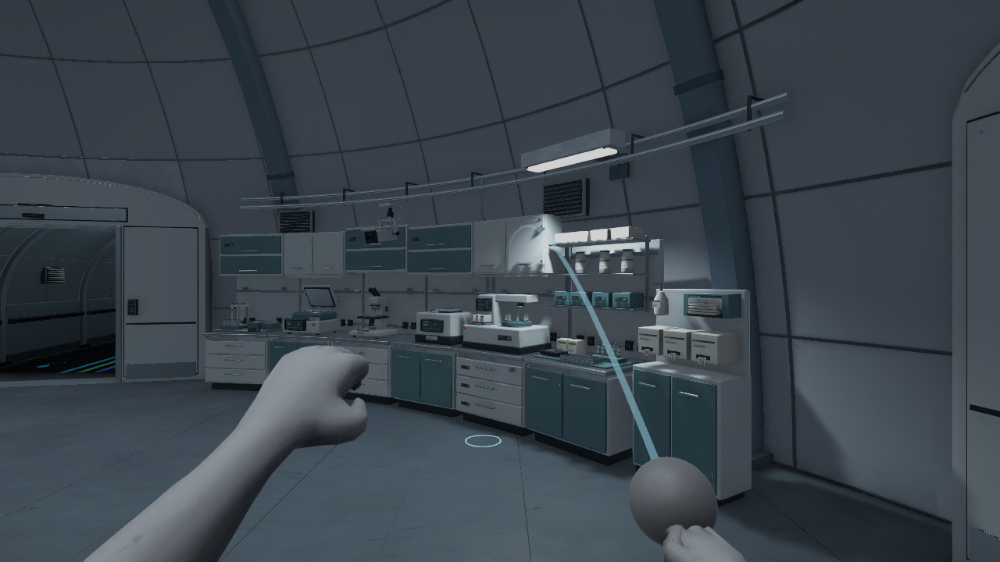
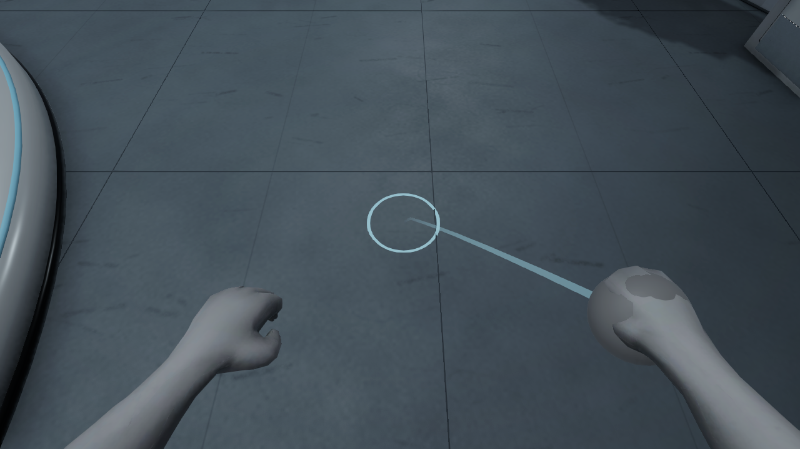
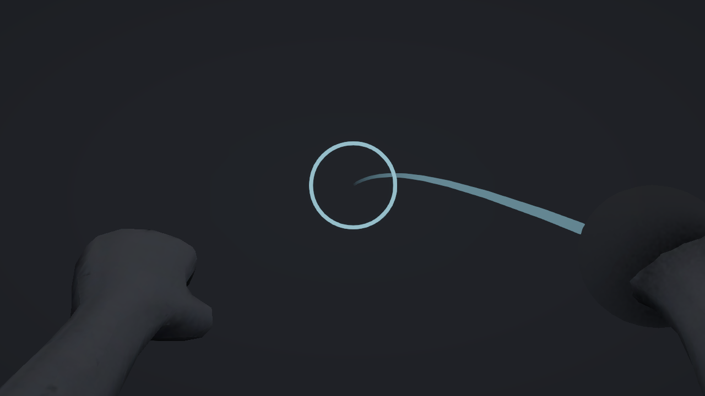
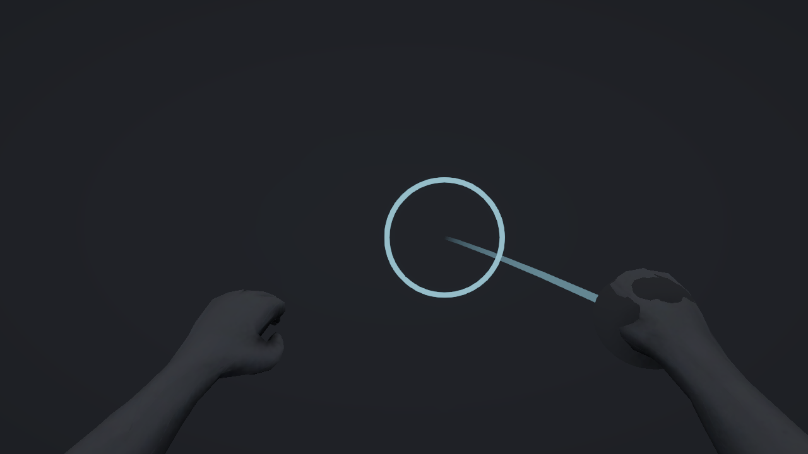
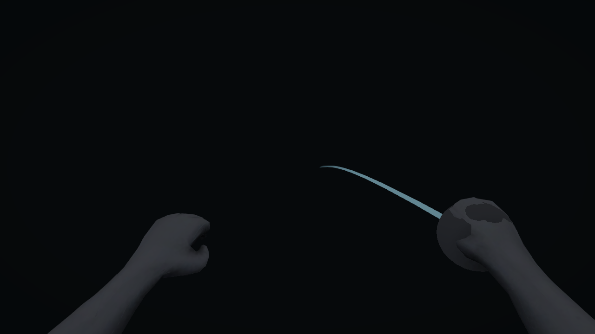

짧고 흐린 투척선 ·충돌면에만 원 표시
2026-11-17 · 송예찬. 선은 일반2.5m·확대4m, 불투명도30%, 끝으로 갈수록0%까지 사라집니다. 원은 표시선이 실제 표면까지 닿을 때만 나옵니다. 선 너머에는 원을 표시하지 않습니다. 실제 투척 속도·위/아래 동작은 유지했습니다. 검수34/34와 설정 안내

이전 ·선 너머 원 표시현재 ·선이 닿지 않아 원 없음
가까운 바닥 ·선이 닿을 때 원 표시
확대 후 벽에 닿으면 원 표시
가까운 벽 ·접촉면 연결
빈 공간 ·원 없음